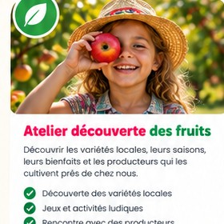

Toutes nos actualités
 Nouveau partenaire
Nouveau partenaireUn nouveau producteur nous rejoint !
Jean-Marc et ses pommes locales rejoignent l'aventure.
Lire l'article → Atelier
AtelierAtelier zéro gaspi : confitures maison
Un atelier gourmand pour transformer les invendus.
Lire l'article → Événement
ÉvénementUne belle journée au marché
Merci à tous pour votre présence et vos échanges.
Lire l'article →
TerrainÇa pousse autrement dans nos vergers !
Découverte de pratiques durables sur le terrain.
Lire l'article →